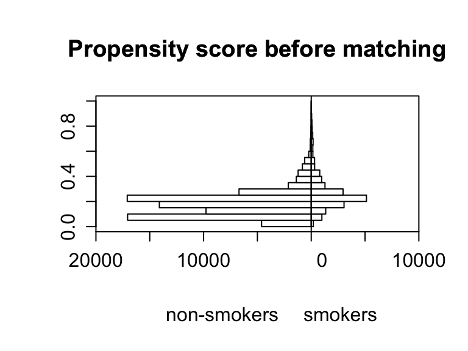
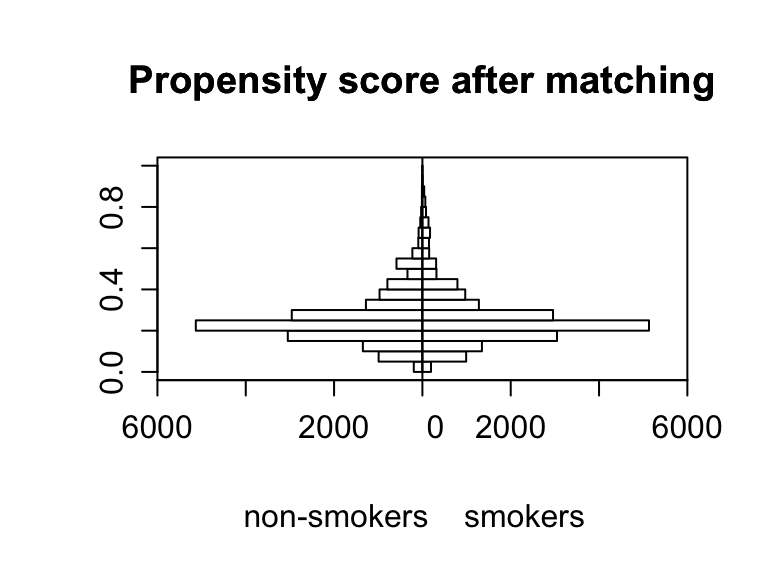

# Load data for Part 1
data <- read_csv(here::here("Homework2", "data", "SMOKING_EDS241.csv"))Homework 2
EDS 241: Homework 2
Reminders: Make sure to read through the setup in markdown. Remember to fully report/interpret your results and estimates (in writing) + present them in tables/plots.
Part 1 Treatment Ignorability Assumption and Applying Matching Estimators (19 points):
The goal is to estimate the causal effect of maternal smoking during pregnancy on infant birth weight using the treatment ignorability assumptions. The data are taken from the National Natality Detail Files, and the extract “SMOKING_EDS241.csv”’ is a random sample of all births in Pennsylvania during 1989-1991. Each observation is a mother-infant pair. The key variables are:
The outcome and treatment variables are:
birthwgt=birth weight of infant in grams
tobacco=indicator for maternal smoking
The control variables are:
mage (mother’s age), meduc (mother’s education), mblack (=1 if mother identifies as Black), alcohol (=1 if consumed alcohol during pregnancy), first (=1 if first child), diabete (=1 if mother diabetic), anemia (=1 if mother anemic)
Mean Differences, Assumptions, and Covariates (3 pts) [Question A]
What is the mean difference in birth weight of infants with smoking and non-smoking mothers [1 pts]?
There is approximately a 245gram difference in the mean birth weights between non smoking and smoking mothers. The mean birthweight from non-smoking mothers is roughly 3430 grams and the mean birthweight from smoking mothers was roughly 3186grams. There is a significant difference between the mean birthweights with a p-value less than 0.001.
smoking <- data %>%
filter(tobacco == 1)
nonsmoking <- data %>%
filter(tobacco == 0)
t.test(smoking$birthwgt, nonsmoking$birthwgt)
Welch Two Sample t-test
data: smoking$birthwgt and nonsmoking$birthwgt
t = -58.932, df = 26945, p-value < 0.00000000000000022
alternative hypothesis: true difference in means is not equal to 0
95 percent confidence interval:
-252.6727 -236.4060
sample estimates:
mean of x mean of y
3185.747 3430.286 mean(nonsmoking$birthwgt)-mean(smoking$birthwgt)[1] 244.5394Under what assumption does this correspond to the average treatment effect of maternal smoking during pregnancy on infant birth weight [0.5 pts]?
The difference in means could be used as a measure for the ATE of maternal smoking on birthweights if there is no correlation between the treatment D and the unobservable characteristics u. However, observational studies are typically prone to biased treatment effect estimates.
Calculate and create a table demonstrating the differences in the mean proportions/values of covariates observed in smokers and non-smokers (remember to report whether differences are statistically significant) and discuss whether this provides empirical evidence for or against this assumption. Remember that this is observational data. What other quantitative empirical evidence or test could help you assess the former assumption? [1.5 pts: 0.5 pts table, 1 pts discussion]
Each of the covariates that we observed in this sample had significant differences in the means, except for diabetes. The anemia characteristic had a control value of 0.014 and a treatment value of 0.007 with a p-value less than 0.001, which implies a significant difference in th mean values between the treated and non-treated groups. The alcohol characteristic had a control value of 0.044 and a treatment value of 0.007 with a p-value less than 0.001, which implies a significant difference in th mean values between the treated and non-treated groups. The mblack characteristic had a control value of 0.135 and a treatment value of 0.108 with a p-value less than 0.001, which implies a significant difference in th mean values between the treated and non-treated groups. The first characteristic had a control value of 0.364 and a treatment value of 0.436 with a p-value less than 0.001, which implies a significant difference in th mean values between the treated and non-treated groups. The mage characteristic had a control value of 27.45 and a treatment value of 25.53 with a p-value less than 0.001, which implies a significant difference in th mean values between the treated and non-treated groups. The meduc characteristic had a control value of 13.24 and a treatment value of 11.92 with a p-value less than 0.001, which implies a significant difference in the mean values between the treated and non-treated groups. The only non-significant difference in means was for the diabete characteristic with a control value of 0.0175 and a treatment value of 0.0173, with a p-value of 0.885 which implies there is no significant difference between the means. These results provide empirical evidence that the characteristics from the treatment and control groups are significantly different and therefore violate the assumption from section b. We could use matching and propensity scoring to help create a less biased counterfactual.
# Selecting binary and continuous variables from the dataset
pretreat_binary <- data %>%
select(anemia, diabete, alcohol, mblack, first, tobacco)
pretreat_continuous <- data %>%
select(tobacco, mage, meduc, birthwgt)
control_binary <- data %>%
select(anemia, diabete, alcohol, mblack, first)
control_continuous <- data %>%
select(mage, meduc)
# Initialize empty data frames to store results of tests
prop_test_results <- data.frame()
t_test_results <- data.frame()
# Identifying binary variables for proportion tests
binary_vars <- names(control_binary)
for (var in binary_vars) {
# Splitting the data into treated and untreated groups for the current variable
treated <- pretreat_binary %>% filter(tobacco == 1) %>% pull(!!sym(var))
untreated <- pretreat_binary %>% filter(tobacco == 0) %>% pull(!!sym(var))
# Performing the proportion test
prop_test_result <- prop.test(x = c(sum(treated), sum(untreated)),
n = c(length(treated), length(untreated)),
correct = FALSE)
# Storing the tidy results of the proportion test in the data frame
prop_test_result_tidy <- broom::tidy(prop_test_result)
prop_test_result_tidy$Variable <- var
prop_test_results <- rbind(prop_test_results, prop_test_result_tidy)
}
# Identifying continuous variables for t-tests
continuous_vars <- names(control_continuous)
for (var in continuous_vars) {
# Dynamically creating the formula for the t-test
formula <- as.formula(paste(var, "~ tobacco"))
# Performing the t-test
t_test_result <- t.test(formula, data = pretreat_continuous)
# Storing the tidy results of the t-test in the data frame
t_test_result_tidy <- broom::tidy(t_test_result)
t_test_result_tidy$Variable <- var
t_test_results <- rbind(t_test_results, t_test_result_tidy)
}
# Combining the results of proportion and t-tests into a single data frame
combined_results <- bind_rows(
prop_test_results %>% select(Variable, estimate1, estimate2, p.value),
t_test_results %>% select(Variable, estimate1, estimate2, p.value)
)
# Creating a table for output using kable and kableExtra
combined_results_table <- kable(combined_results, format = "latex",
col.names = c("Variable",
"Proportion or Mean Control",
"Proportion or Mean Treated", "P-Value"),
caption = "Treated and Untreated Pre-treatment Proportion and T-Test Results") %>%
kable_styling(font_size = 7, latex_options = "hold_position")
# Displaying the table
combined_results_tableATE and Covariate Balance (3 pts) [Question B]
- Assume that maternal smoking is randomly assigned conditional on the observable covariates listed above. Estimate the effect of maternal smoking on birth weight using an OLS regression with NO linear controls for the covariates [0.5 pts].
# ATE Regression univariate
regression_1 <- lm(birthwgt ~ tobacco, data = data)
summary(regression_1)
Call:
lm(formula = birthwgt ~ tobacco, data = data)
Residuals:
Min 1Q Median 3Q Max
-1930.29 -295.75 28.71 340.71 1314.25
Coefficients:
Estimate Std. Error t value Pr(>|t|)
(Intercept) 3430.286 1.791 1915.52 <0.0000000000000002 ***
tobacco -244.539 4.079 -59.95 <0.0000000000000002 ***
---
Signif. codes: 0 '***' 0.001 '**' 0.01 '*' 0.05 '.' 0.1 ' ' 1
Residual standard error: 493.8 on 94171 degrees of freedom
Multiple R-squared: 0.03676, Adjusted R-squared: 0.03675
F-statistic: 3594 on 1 and 94171 DF, p-value: < 0.00000000000000022- Perform the same estimate including the control variables [0.5 pts].
# ATE with covariates
regression_2 <- lm(birthwgt ~ tobacco + anemia+ diabete + alcohol + mblack + first + mage + meduc, data = data)
summary(regression_2)
Call:
lm(formula = birthwgt ~ tobacco + anemia + diabete + alcohol +
mblack + first + mage + meduc, data = data)
Residuals:
Min 1Q Median 3Q Max
-2024.45 -294.06 20.61 329.63 1502.19
Coefficients:
Estimate Std. Error t value Pr(>|t|)
(Intercept) 3362.2582 11.9273 281.897 < 0.0000000000000002 ***
tobacco -228.0731 4.1775 -54.596 < 0.0000000000000002 ***
anemia -4.7964 16.7544 -0.286 0.7747
diabete 73.2275 12.1035 6.050 0.00000000145 ***
alcohol -77.3497 13.4654 -5.744 0.00000000926 ***
mblack -240.0303 5.1062 -47.007 < 0.0000000000000002 ***
first -96.9441 3.4466 -28.127 < 0.0000000000000002 ***
mage -0.6940 0.3566 -1.946 0.0516 .
meduc 11.6883 0.8605 13.583 < 0.0000000000000002 ***
---
Signif. codes: 0 '***' 0.001 '**' 0.01 '*' 0.05 '.' 0.1 ' ' 1
Residual standard error: 484.7 on 94164 degrees of freedom
Multiple R-squared: 0.0717, Adjusted R-squared: 0.07162
F-statistic: 909.2 on 8 and 94164 DF, p-value: < 0.00000000000000022- Next, compute indices of covariate imbalance between the treated and non-treated regarding these covariates (see example file from class). Present your results in a table [1 pts].
# Covariate imbalance
cov_imbal <- xBalance(tobacco ~ anemia+ diabete + alcohol + mblack + first + mage + meduc, data = data,
report=c("std.diffs","chisquare.test", "p.values"))
# Balance Table
kable(cov_imbal, format = "latex",
col.names = c("std.diffs",
"chisquare.test",
"p.values"),
caption = "indices of covariate imbalance between the treated and non-treated")- What do you find and what does it say regarding whether the assumption you mentioned responding to a) is fulfilled? [1 pts]
Propensity Score Estimation (3 pts) [Question C]
- Next, estimate propensity scores (i.e. probability of being treated) for the sample, using the provided covariates. Create a regression table reporting the results of the regression and discuss what the covariate coefficients indicate and interpret one coefficient [1.5 pts]. (believe that we are finding valid counterfacuals)
## Propensity Scores
ps <- glm(tobacco ~ anemia+ diabete + alcohol + mblack + first + mage + meduc,
data = data, family = binomial())
summary(ps)
Call:
glm(formula = tobacco ~ anemia + diabete + alcohol + mblack +
first + mage + meduc, family = binomial(), data = data)
Coefficients:
Estimate Std. Error z value Pr(>|z|)
(Intercept) 3.493297 0.066613 52.442 < 0.0000000000000002 ***
anemia 0.333952 0.079367 4.208 0.000025797 ***
diabete 0.159533 0.065861 2.422 0.0154 *
alcohol 2.026641 0.060353 33.580 < 0.0000000000000002 ***
mblack -0.133447 0.026587 -5.019 0.000000519 ***
first -0.379167 0.019303 -19.643 < 0.0000000000000002 ***
mage -0.040562 0.001931 -21.007 < 0.0000000000000002 ***
meduc -0.297269 0.005152 -57.699 < 0.0000000000000002 ***
---
Signif. codes: 0 '***' 0.001 '**' 0.01 '*' 0.05 '.' 0.1 ' ' 1
(Dispersion parameter for binomial family taken to be 1)
Null deviance: 92325 on 94172 degrees of freedom
Residual deviance: 84459 on 94165 degrees of freedom
AIC: 84475
Number of Fisher Scoring iterations: 5data$psvalue <- predict(ps, type = "response")- Create histograms of the propensity scores comparing the distributions of propensity scores for smokers (‘treated’) and non-smokers (‘control’), discuss the overlap and what it means [1.5 pts].
## PS Histogram Unmatched
histbackback(split(data$psvalue, data$tobacco), main=
"Propensity score before matching", xlab=c("non-smokers", "smokers"))
Matching Balance (3 pts) [Question D]
- Next, match treated/control mothers using your estimated propensity scores and nearest neighbor matching. Compare the balancing of pre-treatment characteristics (covariates) between treated and non-treated units in the original dataset (from c) with the matched dataset (think about comparing histograms/regressions) [2 pts].
- Make sure to report and discuss the balance statistics [1 pts].
## Nearest-neighbor Matching
m.nn <- matchit(tobacco ~ anemia + diabete + alcohol + mblack + first + mage + meduc,
data = data, method = "nearest", ratio = 1)
summary(m.nn)
Call:
matchit(formula = tobacco ~ anemia + diabete + alcohol + mblack +
first + mage + meduc, data = data, method = "nearest", ratio = 1)
Summary of Balance for All Data:
Means Treated Means Control Std. Mean Diff. Var. Ratio eCDF Mean
distance 0.2600 0.1767 0.6190 1.6361 0.1402
anemia 0.0141 0.0078 0.0535 . 0.0063
diabete 0.0175 0.0174 0.0012 . 0.0002
alcohol 0.0442 0.0071 0.1804 . 0.0371
mblack 0.1354 0.1086 0.0783 . 0.0268
first 0.3646 0.4361 -0.1486 . 0.0715
mage 25.5386 27.4531 -0.3663 0.9709 0.0766
meduc 11.9209 13.2394 -0.8190 0.5662 0.0734
eCDF Max
distance 0.2945
anemia 0.0063
diabete 0.0002
alcohol 0.0371
mblack 0.0268
first 0.0715
mage 0.1676
meduc 0.2773
Summary of Balance for Matched Data:
Means Treated Means Control Std. Mean Diff. Var. Ratio eCDF Mean
distance 0.2600 0.2560 0.0299 1.2066 0.0024
anemia 0.0141 0.0134 0.0061 . 0.0007
diabete 0.0175 0.0172 0.0021 . 0.0003
alcohol 0.0442 0.0240 0.0984 . 0.0202
mblack 0.1354 0.1319 0.0103 . 0.0035
first 0.3646 0.3641 0.0009 . 0.0004
mage 25.5386 25.4882 0.0096 1.0004 0.0021
meduc 11.9209 11.8534 0.0420 0.8306 0.0051
eCDF Max Std. Pair Dist.
distance 0.0218 0.0300
anemia 0.0007 0.1070
diabete 0.0003 0.0718
alcohol 0.0202 0.1670
mblack 0.0035 0.0982
first 0.0004 0.0989
mage 0.0071 0.1030
meduc 0.0256 0.1443
Sample Sizes:
Control Treated
All 76021 18152
Matched 18152 18152
Unmatched 57869 0
Discarded 0 0match.data = match.data(m.nn)
## Covariate Imbalance post matching:
xBalance(tobacco ~ anemia+ diabete + alcohol + mblack + first + mage + meduc, data = match.data,
report=c("std.diffs","chisquare.test", "p.values")) strata(): unstrat
stat std.diff
vars
anemia 0.01
diabete 0.00
alcohol 0.11 ***
mblack 0.01
first 0.00
mage 0.01
meduc 0.04 ***
---Overall Test---
chisquare df p.value
unstrat 124 7 0.00000000000000000000000999
---
Signif. codes: 0 '***' 0.001 '** ' 0.01 '* ' 0.05 '. ' 0.1 ' ' 1 ## Histogram of PS after matching
histbackback(split(match.data$psvalue, match.data$tobacco), main=
"Propensity score after matching", xlab=c("non-smokers", "smokers"))
ATT with Nearest Neighbor (3 pts) [Question E]
- Estimate the ATT using the matched dataset. Report and interpret your result (Note: no standard error or significance test is required here)
## Nearest Neighbor
sumdiff_data<-match.data%>%
group_by(subclass)%>%
mutate(diff=birthwgt[tobacco==1]-birthwgt[tobacco==0])
## ATT
NT = sum(smoking$tobacco)
sumdiff<-sum(sumdiff_data$diff)/2
ATT_m_nn = 1/NT * sumdiff
ATT_m_nn[1] -222.9365ATE with WLS Matching (3 pts) [Question F]
- Last, use the original dataset and perform the weighted least squares estimation of the ATE using the propensity scores (including controls). Report and interpret your results, here include both size and precision of estimate in reporting and interpretation.
## Weighted least Squares (WLS) estimator Preparation
PS <- data$psvalue
Y <- data$birthwgt
D <- data$tobacco
EY1 <- D*Y/PS / sum(D/PS)
EY0 <- (1-D)*Y/(1-PS) / sum((1-D) / (1-PS))
ATE_IPW = sum(EY1) - sum(EY0)
ATE_IPW[1] -231.3871data$wgt = (D/PS + (1-D)/(1-PS))
## Weighted least Squares (WLS) Estimates
reg_wls <-lm(tobacco ~ anemia+ diabete + alcohol + mblack + first + mage + meduc,
data = data, weights = wgt)
## Present Results
summary(reg_wls)
Call:
lm(formula = tobacco ~ anemia + diabete + alcohol + mblack +
first + mage + meduc, data = data, weights = wgt)
Weighted Residuals:
Min 1Q Median 3Q Max
-2.8238 -0.5604 -0.5263 -0.4662 3.0398
Coefficients:
Estimate Std. Error t value Pr(>|t|)
(Intercept) 0.5507999 0.0114935 47.923 < 0.0000000000000002 ***
anemia 0.0049728 0.0168933 0.294 0.768
diabete 0.0120639 0.0122651 0.984 0.325
alcohol -0.0003071 0.0138603 -0.022 0.982
mblack 0.0400886 0.0050326 7.966 0.000000000000001660 ***
first 0.0204892 0.0035253 5.812 0.000000006188537536 ***
mage 0.0029144 0.0003580 8.140 0.000000000000000401 ***
meduc -0.0117661 0.0008792 -13.382 < 0.0000000000000002 ***
---
Signif. codes: 0 '***' 0.001 '**' 0.01 '*' 0.05 '.' 0.1 ' ' 1
Residual standard error: 0.7019 on 94165 degrees of freedom
Multiple R-squared: 0.002676, Adjusted R-squared: 0.002601
F-statistic: 36.09 on 7 and 94165 DF, p-value: < 0.00000000000000022Differences in Estimates (1 pts)
- Explain why it was to be expected given your analysis above that there is a difference between your estimates in e) and f)?
Part 2 Panel model and fixed effects (6 points)
We will use the progresa data from last time as well as a new dataset. In the original dataset, treatment households had been receiving the transfer for a year. Now, you get an additional dataset with information on the same households from before the program was implemented, establishing a baseline study (from 1997), and the same data we worked with last time (from 1999). *Note: You will need to install the packages plm and dplyr (included in template preamble). Again, you can find a description of the variables at the bottom of PDF and HERE.
Estimating Effect with First Difference (3 pts: 1.5 pts estimate, 1.5 pts interpretation)
Setup: Load the new baseline data (progresa_pre_1997.csv) and the follow-up data (progresa_post_1999.csv) into R. Note that we created a time denoting variable (with the same name, ‘year’) in BOTH datasets. Then, create a panel dataset by appending the data (i.e. binding the dataset row-wise together creating a single dataset). We want to examine the same outcome variable as before, value of animal holdings (vani).
rm(list=ls()) # clean environment
## Load the datasets
progresa_pre_1997 <- read_csv(here::here("Homework2", "data","progresa_pre_1997.csv"))
progresa_post_1999 <- read_csv(here::here("Homework2","data","progresa_post_1999.csv"))
## Append post to pre dataset
progresa <- rbind(progresa_pre_1997, progresa_post_1999)- Estimate a first-difference (FD) regression manually, interpret the results briefly (size of coefficient and precision!) *Note: Calculate the difference between pre- and post- program outcomes for each family. To do that, follow these steps and the code given in the R-template:
### Code included to help get you started
## i. Sort the panel data in the order in which you want to take differences, i.e. by household and time.
## Create first differences of variables
progresa <- progresa %>%
arrange(hhid, year) %>%
group_by(hhid) %>%
mutate(vani_fd = vani - dplyr::lag(vani))
## ii. Calculate the first difference using the lag function from the dplyr package.
## iii. Estimate manual first-difference regression (Estimate the regression using the newly created variables.)
fd_manual <- lm(vani_fd ~ treatment, data = progresa)
summary(fd_manual)
Call:
lm(formula = vani_fd ~ treatment, data = progresa)
Residuals:
Min 1Q Median 3Q Max
-80706 -129 837 1207 46073
Coefficients:
Estimate Std. Error t value Pr(>|t|)
(Intercept) -1156.75 64.49 -17.936 < 0.0000000000000002 ***
treatment 287.90 85.60 3.363 0.000772 ***
---
Signif. codes: 0 '***' 0.001 '**' 0.01 '*' 0.05 '.' 0.1 ' ' 1
Residual standard error: 4930 on 13512 degrees of freedom
(17143 observations deleted due to missingness)
Multiple R-squared: 0.0008365, Adjusted R-squared: 0.0007625
F-statistic: 11.31 on 1 and 13512 DF, p-value: 0.0007723Fixed Effects Estimates (2 pts: 1 pts estimate, 1.5 interpretation)
- Now also run a fixed effects (FE or ‘within’) regression and compare the results. Interpret the estimated treatment effects briefly (size of coefficient and precision!)
## Fixed Effects Regression
## Present Regression ResultsFirst Difference and Fixed Effects and Omitted Variable Problems (1 pts)
- Explain briefly how the FD and FE estimator solves a specific omitted variable problem? Look at the example on beer tax and traffic fatalities from class to start thinking about ommitted variables. Give an example of a potential omitted variable for the example we are working with here that might confound our results? For that omitted variable, is a FE or FD estimator better? One example is enough.